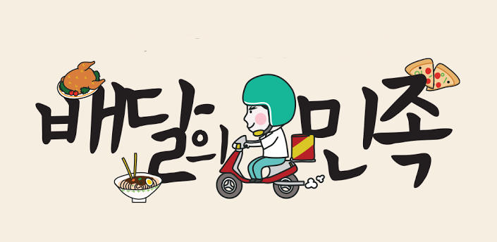

6월 한달 어떤 음식을 가장 배달시켜 먹었나
들어가기에 앞서
본 페이지는 SKT DATA HUB에서 얻은 2018년 6월의 배달 업종 이용 현황 분석 데이터를 활용했다
요일별, 시간대별, 어떤 업종이 가장 배달 호황을 누렸는지 알아보자
아침 시간 6~9시
점심 시간 10~13시
점저 시간 14~17시
저녁시간 18~21시
야식 시간 22~1시
새벽 시간 2~5시
6월 한달 배달 업소 이용 현황 차트
서울시 6월 배달 현황
sdfadsf